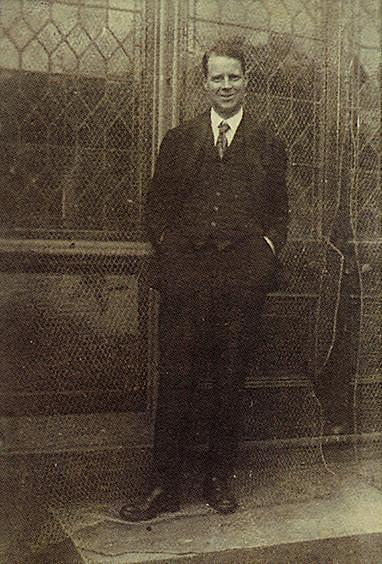
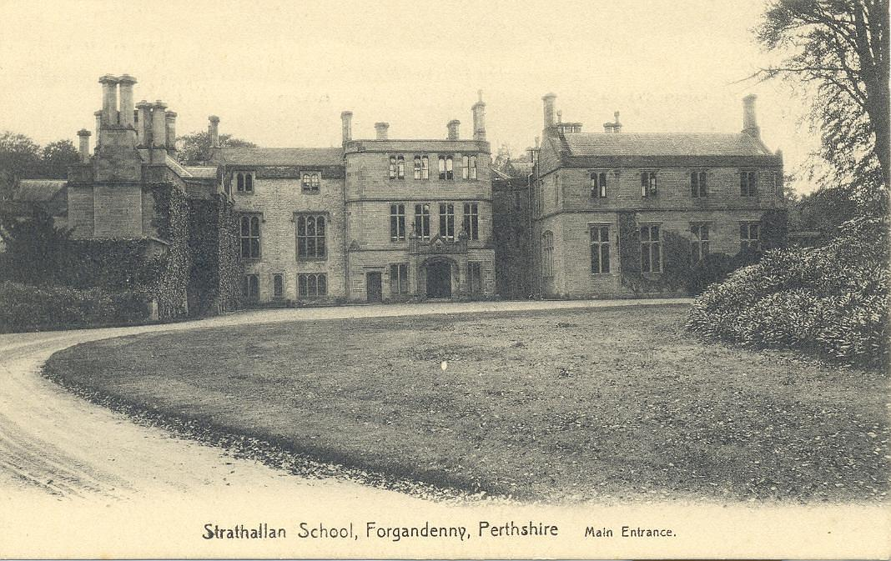

Our History
Things might have changed over the years, but we've never lost sight of the School's founding values and educational mission.
Strathallan School was founded in 1913 in Bridge of Allan, near Stirling, by a young teacher called Harry Riley.
Riley, born in Bradford in 1888 of very humble parents, had ambitions to join the Royal Navy. However, a medical assessment found his colour-blindness and an alternative career in teaching followed.

Qualifying through the LCP (Licentiate of the College of Preceptors), Riley began his teaching career in 1908 in a small private school, Kelvingrove, in Bridge of Allan. With this school’s closure and merger with another in the town a few years later, Riley quickly opted for a very dramatic change of course – to set up his own school aged just 25 and ‘do it his way’.
Strathallan School was therefore founded with seven boys in a house in Bridge of Allan, after Riley found financial backing from two of the boys’ parents. From his earliest days as Headmaster, Riley emphasised four key things:
- Pupils should be known for who they are and as individuals.
- Education should be enjoyed and not a drudgery.
- Education should be inclusive, and find character, talents and potential that was hitherto unknown.
- Hard work is essential if education is to be the improving and transforming force for good Riley believed it could be.
This vision clearly worked. By 1919, the school had grown to over 100 pupils and Riley took another calculated risk. Buying the Freeland Estate in 1920, based in Forgandenny, just three miles south east of the City of Perth.

Riley moved the School to its new site and opened the doors to what remains Strathallan School today, and we celebrated the centenary of that move in 2020-21.
"Harry Riley’s vision – unique at the time – is still held true today, and understanding this is the key to understanding the modern Strathallan."
Riley’s philosophy ensured a more nurturing and caring sort of school from the outset, and this remains the case to this day.
If Riley were to visit us today, while there is much he would not recognise in new buildings and the curriculum, for example, he would recognise the ethos and the ‘feel' of the place. This is perhaps the most remarked upon feature of the School by visitors, pupils and parents alike.